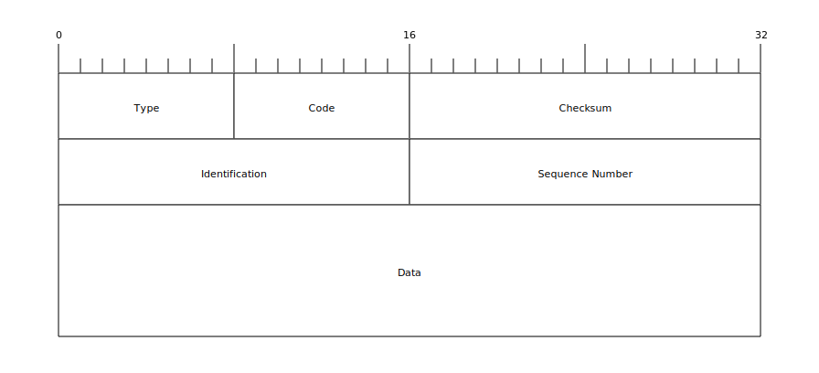

from enum import Enum
class ICMPType(Enum):
ECHOREPLY = 0
ECHO = 8
def __int__(self):
return self.valuePythonでpingの実装してみる
Python
ネットワーク
はじめに
ネットワークの疎通確認を行う際など，pingコマンドにお世話になっている方は多いと思います．私も勿論その一人です． ですが，実際pingは何をしているのか？という点は前々理解していませんでした．そこで，pythonにてpingのサブセット（エコー要求とエコー応答のみ）を実装してみました．
やったこと
- Pythonでpingコマンドのサブセットを実装
- エコー要求に対してエコー応答が返信されることを確認
ICMPについて
ICMPとはInternet Control Message Protocolの略称です．名前の通り，インターネットの通信に関する情報の送信に用いられます． pingコマンドは，このプロトコルのエコー要求とエコー応答という二つのメッセージをやりとりすることで，端末間の疎通確認を行います．
エコー要求とエコー応答のパケットフォーマットは以下の通りです．

なお，これらのメッセージはIPデータグラムのペイロードとして送受信されます．
Pythonによる実装
エコー要求とエコー応答に対応するデータ構造
上述のパケットフォーマットにおけるTypeは，エコー要求では8が，エコー応答では0が設定されます． 従って，以下のようにICMPTypeとして定義することができます．
また，パケットフォーマットからチェックサムフィールドを確認することができます． このチェックサムは以下の手順で計算します．
- チェックサムフィールドを
0で埋める - パケットを16ビット単位で区切る（パケット長が奇数バイトである場合は
0x00を末尾に追加） - 16ビット単位で区切ったデータを1の補数で加算していき合計値を求める
- 加算結果の1の補数を最終結果とする．この時，0の表現としては
0xffffを用いる．
以上の手順でチェックサムを計算する関数calc_checksumを以下のように定義します．
def calc_checksum(data: bytes) -> int:
if len(data) % 2 == 1:
data += b"\x00"
u16_counts = len(data) // 2
checksum = sum(struct.unpack(f"!{u16_counts}H", data))
while 0xFFFF < checksum:
checksum = (checksum & 0xFFFF) + (checksum >> 16)
if checksum != 0xFFFF:
checksum = ~checksum
return checksum & 0xFFFF以下に示すICMPEchoがエコー要求とエコー応答を表現するデータ構造となります．checksumがコンストラクタ引数として指定されなかった場合は，calc_checksumにて計算します．
ICMPEchoはネットワークを通して送受信されます．従って，シリアライズを行うto_bytesと，デシリアライズを行うfrom_bytesを実装しています．
from dataclasses import dataclass
from typing import Optional
import struct
@dataclass(frozen=True)
class ICMPEcho:
type: ICMPType
code: int
id: int
seq: int
data: bytes
checksum: Optional[int] = None
def __post_init__(self):
if self.checksum is None:
object.__setattr__(self, "checksum", 0)
object.__setattr__(self, "checksum", calc_checksum(self.to_bytes()))
def to_bytes(self) -> bytes:
return struct.pack(
f"!BBHHH{len(self.data)}s",
int(self.type),
self.code,
self.checksum,
self.id,
self.seq,
self.data,
)
@classmethod
def from_bytes(cls, packed: bytes) -> "ICMPEcho":
_type, code, checksum, id, seq = struct.unpack("!BBHHH", packed[:8])
type = ICMPType(_type)
data = packed[8:]
return ICMPEcho(type, code, id, seq, data, checksum=checksum)Rawソケットの作成
TCPやUDPを用いた時と同様，ICMPでもソケットを用いてネットワークプログラミングを行います． しかしながら，ICMPパケットはIPデータグラムのペイロードとするため，IPデータグラムを操作する必要があります．
IPデータグラムの操作はRawソケットを用いることで実現できます．そこで，ソケットを作成する関数raw_socketを以下のように定義しました． socket.socketの第２引数にはsocket.SOCK_RAWを第３引数にはsocket.IPPROTO_ICMPを指定します．これは，RawソケットをICMPから利用することを表していいます．
import socket
from contextlib import contextmanager
@contextmanager
def raw_socket():
sock = socket.socket(socket.AF_INET, socket.SOCK_RAW, socket.IPPROTO_ICMP)
try:
yield sock
finally:
sock.close()IPデータグラムのパース
Rawソケットによって受信したデータはIPデータグラムです．従って，これを適切にパースし，エコー応答をペイロードとして取り出す必要があります． 今回，以下のようにIPヘッダを表現するIPHeaderと，IPデータグラムをパースするparse_ip_datagram関数を実装しました． parse_ip_datagram関数では，受信したデータの先頭２０バイトからIPHeaderインスタンスを作成し，残りのデータをペイロードとします．
from typing import Tuple
@dataclass(frozen=True)
class IPHeader:
v: int
hl: int
tos: int
len: int
id: int
off: int
ttl: int
p: int
sum: int
src: str
dst: str
@staticmethod
def from_bytes(packed: bytes) -> "IPHeader":
v_hl, tos, len, id, off, ttl, p, sum, src, dst = struct.unpack(
"!BBHHHBBHII", packed
)
v = v_hl >> 4
hl = v_hl & 0x0F
return IPHeader(
v,
hl,
tos,
len,
id,
off,
ttl,
p,
sum,
socket.inet_ntoa(src.to_bytes(4, byteorder="big")),
socket.inet_ntoa(dst.to_bytes(4, byteorder="big")),
)
def parse_ip_datagram(data: bytes) -> Tuple[IPHeader, bytes]:
ip_header = IPHeader.from_bytes(data[:20])
payload = data[20:]
return (ip_header, payload)エコー要求の送信とエコー応答の受信
これまで実装してきた関数とデータ構造を用いて，エコー要求を送信しエコー応答を受信する関数pingを実装しました． 以下に示されるように，エコー要求をソケットに書き込み，ソケットから読み取ったエコー応答とIPヘッダを出力します．
def print_response(ip_header: IPHeader, echo_reply: ICMPEcho) -> None:
print(
f"ping echo reply from {ip_header.src}: icmp_seq={echo_reply.seq} ttl={ip_header.ttl}"
)
def ping(host: str, seq: int) -> None:
with raw_socket() as sock:
packet = ICMPEcho(ICMPType.ECHO, 0, 0, seq, b"\xff").to_bytes()
sock.sendto(packet, (host, 0))
ip_header, payload = parse_ip_datagram(sock.recvfrom(4096)[0])
echo_reply = ICMPEcho.from_bytes(payload)
print_response(ip_header, echo_reply)実行結果
実際に8.8.8.8に対してpingを呼び出した結果を以下に示します． エコー要求に対して適切なエコー応答が帰ってきていることが確認できます．
import time
for i in range(10):
ping("8.8.8.8", i)
time.sleep(1)ping echo reply from 8.8.8.8: icmp_seq=0 ttl=37
ping echo reply from 8.8.8.8: icmp_seq=1 ttl=37
ping echo reply from 8.8.8.8: icmp_seq=2 ttl=37
ping echo reply from 8.8.8.8: icmp_seq=3 ttl=37
ping echo reply from 8.8.8.8: icmp_seq=4 ttl=37
ping echo reply from 8.8.8.8: icmp_seq=5 ttl=37
ping echo reply from 8.8.8.8: icmp_seq=6 ttl=37
ping echo reply from 8.8.8.8: icmp_seq=7 ttl=37
ping echo reply from 8.8.8.8: icmp_seq=8 ttl=37
ping echo reply from 8.8.8.8: icmp_seq=9 ttl=37参考
[1]
村山公保. 2004. 基礎からわかるTCP/IPネットワーク実験プログラミング. オーム社.